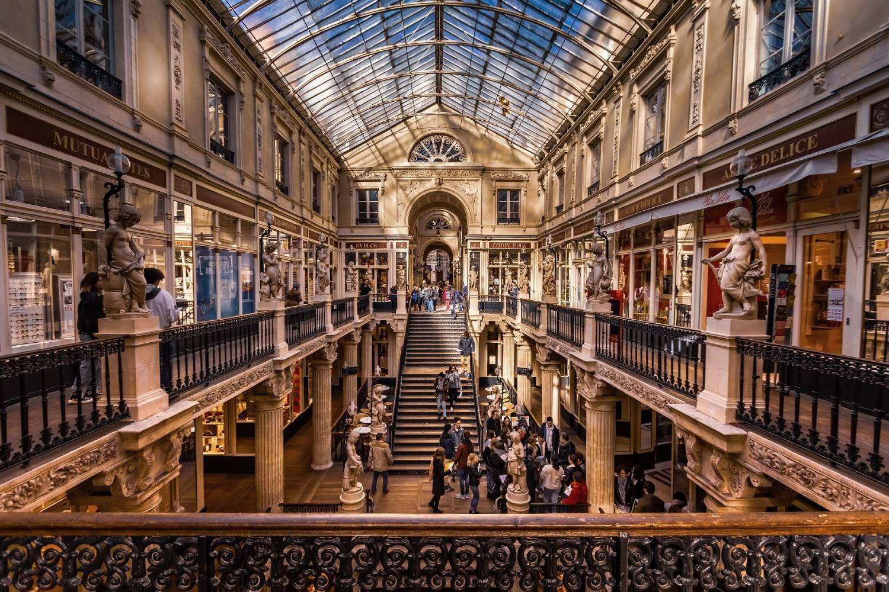
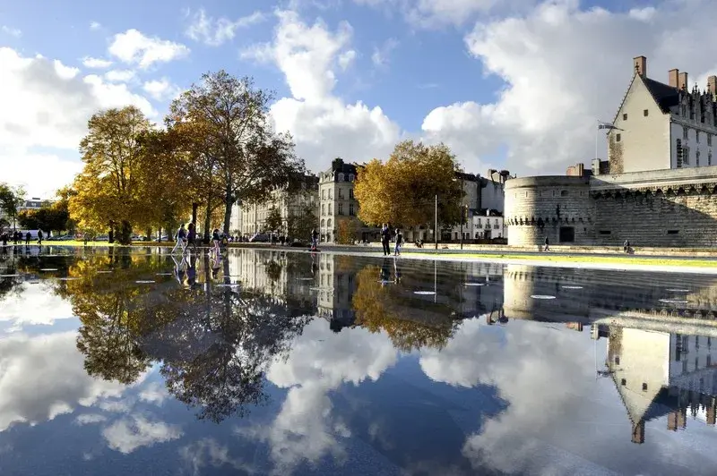
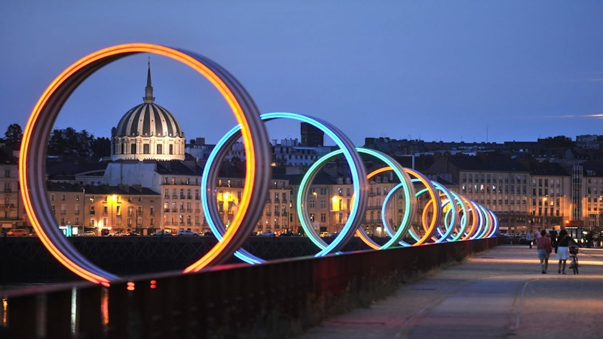
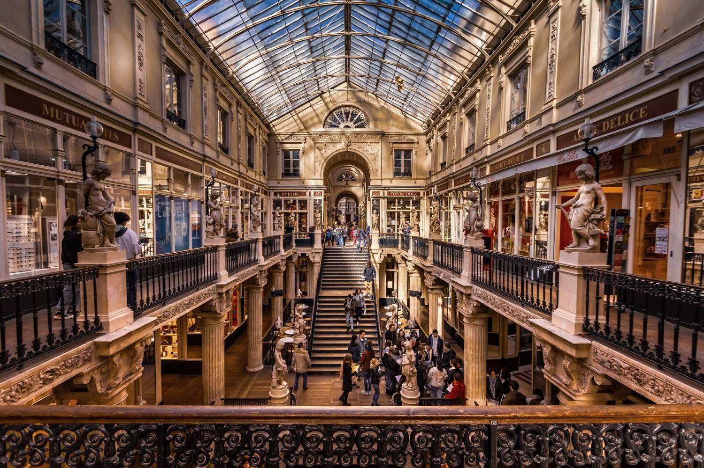
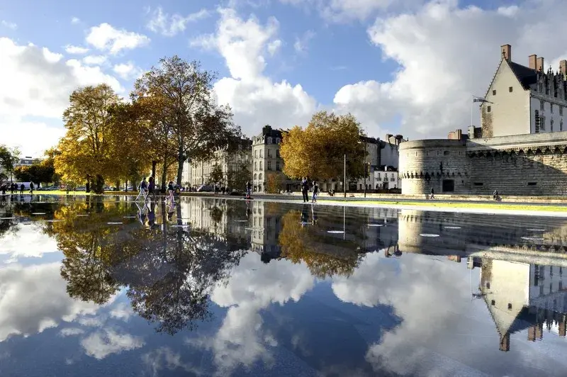
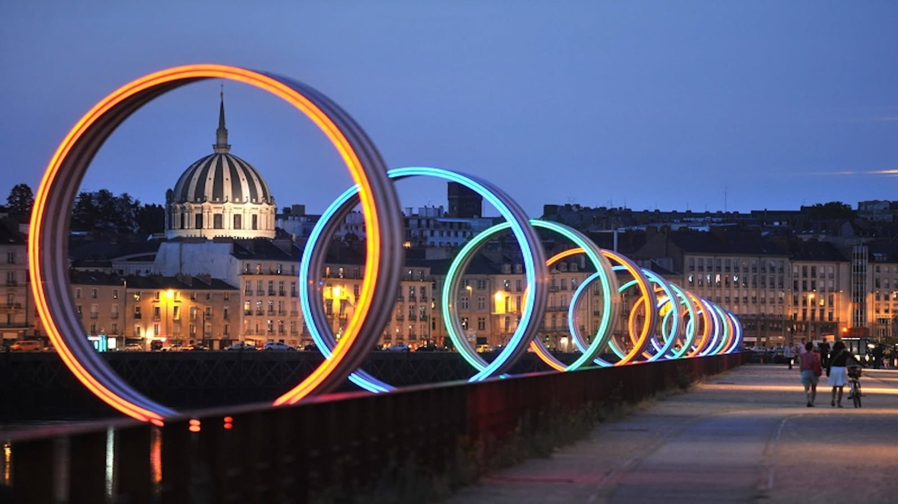

Histoire et Héritages
Nantes, Naonte en gallo et Naoned en breton, est une commune de l'ouest de la France, située au sud du Massif armoricain, qui s'étend sur les rives de la Loire, à 50 km de l'océan Atlantique.
Chef-lieu du département de la Loire-Atlantique et préfecture de la région Pays de la Loire, elle fait partie de la Bretagne historique, située en Pays nantais, un des pays traditionnels de Bretagne. Elle est en 2022, la sixième commune la plus peuplée de France avec ses 325 070 habitants et la première de l'Ouest en nombre d'habitants.
Nantes est également l'élément central de Nantes Métropole, peuplée de 683 981 habitants en 2022 au sein de la huitième unité urbaine (683 313 habitants en 2022) et de la septième aire d'attraction de France, comptant 1 041 894 habitants au 1er janvier 2022.
L'agglomération nantaise, associée à l'agglomération de Saint-Nazaire constituant son avant-port sur l'estuaire de la Loire, forme aujourd'hui le principal pôle métropolitain du Grand Ouest français.
Le voyage à Nantes
Au delà de sa réussite sur le plan économique et industriel, la ville de Nantes a su développer son tourisme et ce grâce à une région diverse où l'on peut voir tout type de paysage.
Au coeur de la ville se trouve un parcours guidé organisé par l'association du voyage à Nantes qui vous invite à découvrir tout les lieux atypiques de cette ville, les endroits insolites qu'on peut y trouver, les spécialités culinaires qu'on peut y découvrir et tant d'autres choses.
Afin de vous donner envie de venir découvrir tout cela par vous même nous vous proposons une première sélection des merveilleuses choses à venir découvrir en pays nantais. Vous allez découvrir 12 lieux incontournables de notre belle ville et plus encore
 




